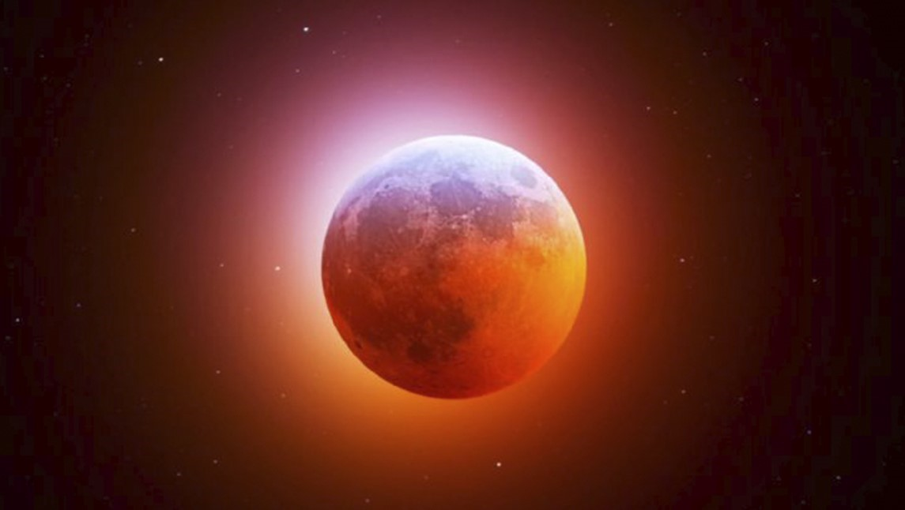

¡Fijarse en el Cielo que estaba pasando cuando conoces a una persona, es una herramienta maravillosa!
Por ejemplo, la última vez que el Nodo Sur del momento estaba transitando mi Saturno natal, entró a mi vida un maestro que fue realmente mi Saturno. Me llevó a comprender verdaderamente la naturaleza de Saturno, a hacerme responsable, a madurar y, a la vez, me mostró toda la dureza que yo tenía que descascar en mi interior.
La última vez que el Nodo Sur del momento transitaba mi Venus natal, conocí a una mujer que fue fundamental en mi vida, con la que me asocié. Ella formó parte de un giro importantísimo en mi destino.
La última vez que el Nodo Sur del momento transitaba mi Marte natal, conocí a un hombre con el cual estuve en pareja durante 8 años y con quien llegamos hasta el ¡sí quiero! del anillo (y por otras razones que no vienen al caso, decidí en su momento no dar el gran paso).
También la ante última vez que Júpiter transitaba mi Nodo Norte natal quede embarazada de mi bella Isabella. Y la última vez que el grande del zodiaco transitó por allí, tuve la maravillosa oportunidad de reencontrarme con un guía que iría a revelarme tanta abundancia en el sentido de la vida, que no lo puedo poner en simples palabras. Ese momento, como el anterior, fueron de un cambio de GPS total.
¿Te fijaste qué tránsitos estabas teniendo cuando conociste a personas fundamentales en tu vida? ¿Cuándo te ocurrieron sucesos importantes? Es la mejor manera de aprender a leer el Cielo.
Por lo general, los Nodos personales o de tránsito están implicados. Porque los sucesos de abajo están reflejados arriba, siempre. ¡Pero también recuerda! De vos y solo de vos depende aceptar, rechazar, arruinar o aprovechar las oportunidades que llegan. El Cielo extiende su mano, pero está en uno tomarla o despreciarla.
Y no, no es magia; es la música celeste. Es la matemática de la Matrix. Es astrología.